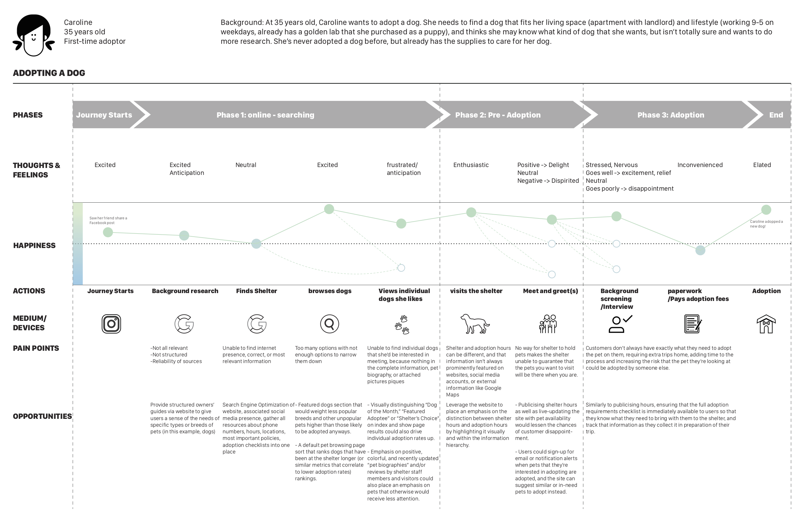

ANALYSIS
Customer Journey Mapping
Keeping the stakeholder triangle in mind, we synthesized our research into insights, pain points, and opportunities.
Adopter's Journey Map
During our first critique, we were told that this was too broad and to focus of one aspect so we decided to focus of the period of time before adopting a dog.
Service Providers's Journey Map
By analyzing the time before a dog was adopted, We learned that the only interaction between customer and service provider was the pre-adoption and adoption phases.
Creating Useful Personas
Creating the right persona influenced our direction for design. We knew it was critical to base our persona on our research with real people and not based on assumptions. The key goal for Jhené was to focus on getting her a dog that matches her existing dog.
Our Customer

Our Service Provider

Our Business Owner

Developing Our Scenarios and Storyboards
After writing out 20 scenarios, we narrowed down into 8 different scenarios to storyboard. Practicing getting our ideas out helped us get rid of bad ideas faster as well as allow us to think creatively about our potential solutions. Our main takeaway from generating many concepts was to help us discover new possibilities and opportunities that are there as value for our stakeholders.
INSIGHTS
People Care About Personality
After analyzing the feedback we got from speed dating we were able to gain several insights:
1. People have preferences on the characteristics of dogs.
2. People are not as interested in exposure to detailed information on dogs initially.
3. They want a smooth adoption process.
4. They want to learn more about the qualities of the dogs.